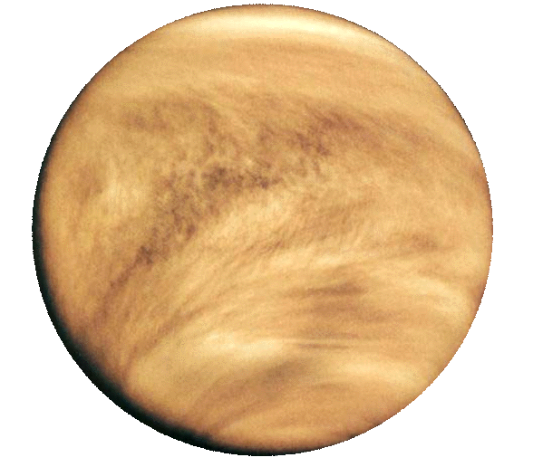

Solen

Solen, eller sola, er stjernen i sentrum av solsystemet som jorden og andre objekter (planeter, asteroider, meteoroider, kometer og støv) går i bane rundt. Den er nesten perfekt kuleformet (sfærisk) og består av varm plasma sammenvevd i magnetfelt. Diameteren er ca. 1 392 000 km (ca. 109 ganger jordens). Massen er ca. 2×1030 kg (ca. 333 000 ganger jordens) og utgjør ca. 99,86 % av massen i solsystemet. 73,46 % av massen er hydrogen; helium utgjør 24,86 %, mens 1,69 % (tilsvarende 5 628 jordmasser) er tyngre grunnstoff, deriblant oksygen, karbon, neon og jern.
Med en effektiv overflatetemperatur på 5 778 K (5 505 °C) har solen en tilnærmet hvit farge, men fra jordoverflaten fremstår den som gul på grunn av atmosfærisk spredning av blått lys. Solen er en hovedseriestjerne som genererer energi ved kjernefysisk fusjon av atomkjerner av hydrogen til helium. I kjernen fusjoneres 620 millioner tonn hydrogen per sekund, mens 4,26 millioner tonn omdannes til strålingsenergi per sekund.
Solens absolutte størrelsesklasse er +4,83; som nærmeste stjerne er imidlertid solen det lyseste objektet på himmelen med en tilsynelatende størrelsesklasse på –26,74. Solens varme korona danner solvind, en strøm av ladde partikler som strekker seg utover til heliopausen ved ca. 100 AE. Boblen som dannes i den interstellare materien, kalles heliosfæren og er den største kontinuerlige strukturen i solsystemet.
Gjennomsnittsavstanden fra jorden er ca. 149,6 millioner kilometer (1 AE), og lyset bruker 8 minutter og 19 sekunder til jorden. Avstanden varierer mellom jordens perihelium i januar og aphelium i juli. Energien fra sollys er opphavet til nesten alt liv på jorden ved hjelp av fotosyntese, og driver jordens klima og vær.
Merkur

Merkur er den innerste og minste planeten i solsystemet og har en omløpstid rundt solen på 87,969 dager. Merkurs bane har den høyeste eksentrisiteten av alle planetene i solsystemet, og den har den minste aksehelningen. Den fullfører tre rotasjoner rundt egen akse for hvert andre omløp rundt solen. Perihelpunktet av Merkurs bane preseserer med overskytende 43 buesekunder per århundre, et fenomen som ble forklart på 1900-tallet av Albert Einsteins generelle relativitetsteori.
Den tilsynelatende størrelsesklassen går fra -2,3 til 5,7, og sett fra jorden er Merkur en lys planet. Nærheten til solen (største vinkelavstand er 28,3°) gjør den vanskelig å observere fra jorden. Med mindre det er en solformørkelse kan den bare ses i tussmørket ved daggry eller om kvelden fra den nordlige halvkulen, mens dens ekstreme elongasjon forekommer i deklinasjoner sør for himmelekvator slik at den kan sees fra gunstige steder ved moderate breddegrader ved en helt mørk himmel på den sydlige halvkule.
Bakkebaserte teleskop viser kun en opplyst halvmåne med begrensede detaljer. Mye av informasjonen om planeten ble samlet av romsonden Mariner 10 (1974–76), som kartla rundt 45 % av overflaten. Siden 17. mars 2011 har romsonden MESSENGER gått i bane rundt Merkur, kartlagt resten av overflaten og oppdaget bl.a. is på nordpolen.
Utseendemessig er Merkur forholdsvis lik månen; den er kraterbelagt med regioner med jevne sletter, har ingen naturlige satellitter og ingen nevneverdig atmosfære. Den har imidlertid, i motsetning til månen, en stor kjerne av jern som genererer et magnetfelt med styrke på rundt 1,1 % av jordens. Planeten er usedvanlig kompakt på grunn av den relative størrelsen på kjernen. Overflatetemperaturen varierer fra -173 °C på bunnen av kratrene ved polene til 427 °C på de varmeste stedene i solsiden.
Registrerte observasjoner av Merkur daterer seg minst tilbake til det første årtusenet f.Kr. Før det 4. århundre f.Kr., trodde greske astronomer at planeten var to separate objekter; det ene bare synlig ved soloppgang, som de kalte Apollon, og den andre bare synlig ved solnedgang, som de kalte Hermes. Dagens navn på planeten kommer fra romerne, som kalte den opp etter den guden Merkur, som de likestilte med den greske Hermes (Ἑρμῆς). Det astronomiske symbolet for Merkur er ☿, en stilisert versjon av Hermes' merkurstav.
Venus

Venus er den andre planeten fra solen og den tredje minste i solsystemet. Planeten er oppkalt etter Venus, den romerske gudinnen for kjærlighet, skjønnhet og fruktbarhet. Den italienske fysikeren Galileo Galilei oppdaget tidlig på 1600-tallet at planeten hadde faser som månen. Dette var blant de første observasjonene som klart motsa Ptolemaios' geosentriske modell som plasserte jorden som midtpunkt i universet, og lot solen og de andre planetene rotere rundt jorden.
Etter månen er Venus det mest lyssterke naturlige objektet på nattehimmelen og den er lys nok til å kaste skygger. Siden Venus er en innenforliggende planet i forhold til jorden, synes den aldri å være langt unna solen. Hvis man er langt nok mot nord (for eksempel Tromsø) på jorden er Venus i visse perioder sirkumpolar og synlig hele natten. Det samme er tilfelle i visse andre perioder hvis man er langt nok mot sør på jorden. Den kalles Aftenstjernen når den er synlig etter solnedgang og Morgenstjernen når den er synlig før soloppgang.
Venus er en terrestrisk planet og blir noen ganger kalt jordens «søsterplanet» på grunn av relativt lik størrelse, gravitasjon og sammensetning. Et ugjennomsiktig lag med svært reflektive skyer av svovelsyre hindrer overflaten i å bli sett i synlig lys fra verdensrommet. Venus har den tetteste atmosfæren av alle de terrestriske planetene i solsystemet; dens atmosfære består hovedsakelig av karbondioksid. Venus har ikke noe karbonkretsløp som holder karbon igjen i steiner og andre overflatestrukturer, og det ser heller ikke ut til at noe organisk liv absorberer karbonet i biomasse. Overflaten er et støvete, tørt ørkenlandskap med mange platelignende steiner som periodisk fornyes av vulkanisme.
På 1900-tallet avdekket planetologien noen av hemmelighetene om overflaten, og i 1990–1991 kartla Magellan-prosjektet den i detalj. Grunnen viser tegn til omfattende vulkanisme og svovelen i atmosfæren kan indikere relativt nylige utbrudd. Mangelen på bevis for lavastrømmer i forbindelse med de synlige kalderaene er fortsatt en gåte. Planeten har få nedslagskratre, noe som viser at overflaten er relativ ung – ca. 300–600 millioner år gammel. Det finnes ingen tegn til platetektonikk. Dette kan skyldes sterke forkastninger og at mantelen har høy viskositet. Denne forskjellen mellom jorden og Venus kan forklares med fraværet av vann. Radioaktivitet skaper mer varme i Venus' indre enn den som slippes ut på overflaten. Denne varmen frigjøres kanskje i perioder hvor overflaten gjennomgår massiv omdannelse.
Jorden
Jorden eller jorda, (latin: Tellus eller Terra), menneskenes planet, er den tredje planeten i vårt solsystem regnet fra solen. Det er den femte største planeten i solsystemet og planeten med størst tetthet, hvilket innebærer at dens gravitasjon kun overgås av Jupiter, Saturn og Neptun. Jorden er den største av solsystemets fire steinplaneter, med en diameter noe større enn Venus' og om lag dobbelt så stor som Mars. Jordkloden blir også noen ganger omtalt som Verden, den blå planeten, eller som Tellus («Jord») etter dens ene latinske betegnelse. Jorden er det eneste stedet i Universet som man med sikkerhet kan si at det finnes liv.
Som hjem for millioner av arter, inkludert mennesker, er jorden det eneste astronomiske objekt hvor man vet at det finnes liv. Forskere mener at planeten ble dannet for 4,6 milliarder år siden og at det oppstod liv på overflaten før det var gått en milliard år. Jordens biosfære har hatt merkbar betydning for atmosfærens utvikling og andre abiotiske forhold på planeten, noe som har gjort det mulig for aerobe organismer å utbre seg. Dette har igjen ført til dannelsen av ozonlaget, som sammen med jordens magnetfelt blokkerer for skadelig solstråling og dermed muliggjør liv på land. Jordens fysiske egenskaper, så vel som dens geologiske historie og banens plassering i forhold til solen, har tillatt liv på planeten å eksistere i mer enn tre milliarder år.
Jorden påvirker og påvirkes av andre objekter i rommet, spesielt av solen og månen. De geologiske prosessene styres av to energikilder: Jordens indre energi og varmeutvikling driver de indre prosessene med vulkanisme, jordskorpe- og bergartsdannelse, platetektonisk kontinentaldrift og havendring. Jordens tyngdekraft og Solens energi driver de ytre prosessene hvor vind og nedbør skaper erosjon, forvitring og sedimentær avsetning. På jordoverflaten møtes de indre og ytre geologiske kreftene og former de biologiske artenes livsmiljø.
For tiden foretar jorden et omløp rundt solen for hver 366,26 gang den roterer rundt sin egen akse, hvilket tilsvarer 365,26 solare dager, eller ett siderisk år. Jordens rotasjonsakse heller 23,4 grader i forhold til den rette vinkelen på jordens omløpsbane rundt solen, noe som skaper årstidsvariasjoneer med en syklus på ett tropisk år (365,24 solare dager). Jordens eneste måne – månen – som begynte å gå i bane rundt jorden for om lag 4,5 milliarder år siden, bidrar med å skape tidevann, er stabiliserende for aksehelningen og bremser gradvis jordens rotasjon. Inntil om lag 3,8 milliarder år siden sørget en rekke nedslag av asteroider for betydelige endringer på jordens overflate.
Planetens mineraler og produkter fra biosfæren er ressurser som bidrar til å opprettholde menneskeheten. Befolkningen er delt inn i omtrent 200 selvstendige stater, som påvirker hverandre gjennom diplomati, reiser, handel og militære handlinger. Menneskehetens kulturer har gjennom tidene hatt mange ulike oppfatninger av jorden, deriblant personifisering av planeten som en guddom, overbevisninger om at jorden er flat og/eller at den er senteret i universet. I nyere tid hersker mange steder en erkjennelse av at jorden trenger menneskelig inngripen og tilpasning for at livsbetingelsene skal kunne bestå.
Mars

Mars er den fjerde planeten fra solen i vårt solsystem og er oppkalt etter den romerske krigsguden Mars. Planeten blir ofte beskrevet som den «røde planeten» på grunn av sitt rødlige utseende, forårsaket av jern(III)oksid på overflaten. Mars er en steinplanet med en tynn atmosfære. Overflateegenskapene minner om både nedslagskraterne på månen og vulkanene, dalene, ørkenene og de polare iskappene på jorden. Rotasjonsperioden og årstidssyklusene på Mars ligner også på jorden siden det er aksehelningen som fører til årstidene. Olympus Mons er det høyeste kjente fjellet i solsystemet, og Valles Marineris er det største dalsystemet. Det flate Borealisbassenget på den nordlige halvkulen dekker ca. 40 % av planeten og kan stamme fra et gigantisk nedslag.
Før Mariner 4 gjennomførte den første forbiflyvningen i 1965, ble det spekulert i om det fantes flytende vann på overflaten. Jevnlige variasjoner i lyse og mørke flekker, spesielt ved de polare breddegrader, kunne tolkes som hav og kontinenter. Lange, mørke striasjoner ble tolket som kanaler med flytende vann. Disse rette linjeformasjonene ble senere forklart som synsbedrag, men geologiske bevis samlet av ubemannede oppdrag antyder at Mars en gang hadde store områder dekket av vann på overflaten. I 2005 avslørte radardata store mengder is ved polene og mildere breddegrader. Mars-sonden Spirit samlet inn prøver av kjemiske forbindelser som inneholdt vannmolekyler i mars 2007. Landingsfartøyet Phoenix samlet inn prøver av is i grunt jordsmonn den 31. juli 2008. 28. september 2015 annonserte NASA at de hadde funnet bevis på rennende saltvann under overflaten på Mars.
Mars har to små måner, Phobos og Deimos, som er uregelmessig formet. Disse kan være innfangede asteroider tilsvarende den trojanske asteroiden 5261 Eureka. Rundt planeten kretser det tre funksjonelle og ubemannede romskip: Mars Odyssey, Mars Express og Mars Reconnaissance Orbiter. På overflaten er Mars Exploration Roveren Opportunity og dens utrangerte tvilling Spirit, roveren Curiosity, sammen med en rekke andre uvirksomme landingsfartøy og rovere, både vellykkede og mislykkede. Landingsfartøyet Phoenix fullførte sitt oppdrag på overflaten i 2008. Observasjoner av NASAs nå nedlagte Mars Global Surveyor beviser at deler av den sørlige polisen har trukket seg tilbake. Observasjoner av NASAs Mars Reconnaissance Orbiter har avdekket mulig strømmende vann under de varmeste månedene på Mars. I 2013 avdekket roveren Curiosity at jordsmonnet inneholder 1.5–3 % vann, eller 33 liter per m³.
Mars kan enkelt sees fra jorden med det blotte øye. Dens tilsynelatende størrelsesklasse når –3,0, noe som kun slås av Venus, Jupiter, månen og solen. Planetsymbolet fra gammelt av er det samme som symbolet for jern (♂), en stilisert utgave av guden Mars med skjold og spyd.
Jupiter

Jupiter er den femte planeten fra solen og den største planeten i solsystemet.[d] Planetens masse er én promille av solens, men to og en halv gang massen til alle andre planeter i solsystemet til sammen. Jupiter, Saturn, Uranus og Neptun er gasskjemper, og blir noen ganger referert til som de ytre planetene i solsystemet.
Planeten var i oldtiden forbundet med mytologi og religiøse oppfatninger i en rekke kulturer. Romerne oppkalte planeten etter den romerske guden Jupiter. Med en tilsynelatende størrelsesklasse på –2,94, er planeten i gjennomsnitt det tredje mest lyssterke objektet på nattehimmelen etter månen og Venus. Mars utligner såvidt Jupiters lysstyrke ved enkelte punkt i banen.
Jupiter består hovedsakelig av hydrogen. Helium utgjør en fjerdedel av massen – den kan også ha en steinete kjerne av tyngre grunnstoffer. Den raske rotasjonen gir Jupiter form som en flattrykt sfæroide, med en liten bul rundt ekvator. Den ytre atmosfæren er segregert i flere striper på forskjellige høyder, som fører til turbulens og stormer langs de vekselvirkende grensene. Et fremtredende resultat er den store røde flekken, en gigantstorm som i alle fall har eksistert siden 1831, da den ble sett gjennom et teleskop.
Rundt planeten ligger et svakt planetarisk ringsystem og en kraftig magnetosfære. Av minst 79 måner, ble de fire store galileiske måner oppdaget av Galileo Galilei i 1610. Den største månen Ganymedes er større enn planeten Merkur. Den nest største månen Callisto er bare litt mindre enn Merkur. Den svovelfargede månen Io er kjent for sine vulkanske formasjoner. Den isdekkede månen Europa har en tynn atmosfære som hovedsakelig er sammensatt av oksygen.
Jupiter har blitt utforsket av flere robot-romfartøyer, deriblant av Pioneer-sondene, Voyager-sondene og Galileos banesonde. Den siste sonden i denne rekken er Juno, som ankom Jupiter den 5. juli 2016. Sonden går i polarbane for å studere magnetfeltet, leter etter bevis for en steinkjerne og utforsker hvor mye vann det er i atmosfæren. Fremtidige oppdrag for utforskning av det jovianske[e] systemet omfatter mulige islagte flytende hav på månen Europa.
Saturn

Saturn er den sjette planeten fra solen og den nest største i solsystemet, etter Jupiter. Den er oppkalt etter den romerske guden Saturn, og det astronomiske symbolet ♄ representerer gudens sigd. Saturn er en gasskjempe med bare én åttendedel av jordens tetthet, men med en gjennomsnittsradius ni ganger jordens,[7][8] og med 95 ganger jordens masse.[9][10][11] Saturn har den største flattrykning (1/10) blant planetene i solsystemet.
Saturn har sannsynligvis en kjerne av jern, nikkel og silikater, omgitt av et lag metallisk hydrogen, fulgt av lag med flytende hydrogen og helium, som ytterst mot overflaten går over i gassform.[12] Laget med metallisk hydrogen leder elektrisk strøm, og antas å gi opphav til planetens magnetfelt, som ved overflaten er noe svakere enn jordens, og ca. én tjuendedel av Jupiters.[13] Den ytre atmosfæren er stort sett rolig og uten kontraster, men langvarige formasjoner kan oppstå. Vindhastighetene kan komme opp i 1 800 km/t – raskere enn på Jupiter, men ikke like raske som på Neptun.[14] Den store hvite flekken er en kjent storm som finner sted rundt sommersolverv hvert Saturn-år på den nordlige halvkulen. Ett Saturn-år tilsvarer ca. 30 år på jorden.[L 3]
Saturns ringsystem består av ni sammenhengende hovedringer og tre usammenhengende buer, som består hovedsakelig av ispartikler, med også en del stein og støv. 62 kjente måner[15] går i bane rundt planeten – 53 av disse har fått offisielle navn. I tillegg befinner det seg hundrevis av «dvergmåner» i ringsystemet. Titan, Saturns største og solsystemets nest største måne, er større enn planeten Merkur og er den eneste månen i solsystemet med en betydelig atmosfære.
Uranus

Uranus er den syvende planeten fra solen. Den er en gasskjempe, den tredje største planeten etter diameter og den fjerde største etter masse i solsystemet. Den er oppkalt etter den greske himmelguden Uranos (gammelgresk: Οὐρανός), som var faren til Kronos (Saturn) og bestefaren til Zevs (Jupiter). Planeten kan i blant ses med det blotte øye når nattehimmelen er spesielt stjerneklar. Den ble likevel ikke gjenkjent som en planet i oldtiden på grunn av dens utydelige og langsomme bane. William Herschel kunngjorde oppdagelsen 13. mars 1781 og ekspanderte solsystemets kjente yttergrenser for første gang i nyere tid. Uranus var også den første planeten som ble oppdaget med et teleskop.
Uranus har en lignende kjemisk sammensetning som Neptun, og begge plasseres ofte i kategorien «iskjemper». Mens atmosfærene til gasskjempene Jupiter og Saturn hovedsakelig består av hydrogen og helium, har Uranusatmosfæren en større mengde isdannende stoffer som blant annet vann, ammoniakk og metan sammen med spormengder av hydrokarboner. Den er den kaldeste planetariske atmosfæren i solsystemet med temperaturer ned i −224 °C (49 K). Den er lagdelt oppbygd av skyer, hvor vann trolig danner de laveste skyene, mens metan danner de øvre skylagene. Under atmosfæren består trolig Uranus for det meste av is og bergarter.
Uranus har en magnetosfære, 13 kjente planetringer og 27 kjente måner. Rotasjonsaksen heller sidelengs, og ligger nesten i planet til dens omdreining rundt solen. Nord- og sørpolen ligger i det området hvor de fleste andre planeter har sine ekvatorer. Bilder fra romsonden Voyager 2 viste i 1986 en planet uten særpreg i synlig lys, uten skybåndene eller stormene som er knyttet til andre kjempeplaneter. Observatører og forskere på jorden har imidlertid sett tegn til årstidsvariasjoner og økte væraktiviteter når Uranus nærmer seg sitt jevndøgn. Vindhastighetene kan komme opp i 250 m/s (900 km/t).
Neptun
Neptun er den åttende og ytterste planeten i solsystemet regnet fra solen, og den eneste planeten det er umulig å se fra jorden med det blotte øyet. Den er oppkalt etter Neptun, den romerske havguden. Den er den fjerde største planeten i solsystemet etter diameter og har den tredje største massen. Neptun går i en bane som i gjennomsnitt er 30,1 AE fra solen, det vil si omtrent 30 ganger avstanden mellom jorden og solen. Det astronomiske symbolet Det astronomiske symbolet for Neptun er en stilisert versjon av guden Neptuns trefork.
Neptun var den første planeten som ble funnet på bakgrunn av matematisk prediksjon. Alexis Bouvard (1767–1843) oppdaget uventede endringer i banen til Uranus, og utledet at banen var påvirket av gravitasjonell perturbasjon fra en ukjent planet. Neptun ble så observert 23. september 1846 av Johann Gottfried Galle (1812–1910) innenfor én grad av en posisjon som var beregnet av Urbain Le Verrier (1811–1877). Kort tid etter ble Triton, Neptuns største måne, oppdaget. Den tredje største månen Nereid ble oppdaget 1. mai 1949. Elleve andre måner ble oppdaget teleskopisk fra 1981 til 2003, mens den 14. månen ble oppdaget i 2013 på bilder fra 2004. Neptun har hittil blitt besøkt av bare ett romfartøy, Voyager 2, som fløy forbi planeten 25. august 1989.
Neptun har en lignende kjemisk sammensetning som Uranus, og begge skiller seg fra sammensetningen til de langt større gasskjempene Jupiter og Saturn. Som en følge av denne forskjellen plasserer astronomer i visse tilfeller de to førstnevnte i en egen kategori, «iskjempene». Jupiters og Saturns atmosfære består hovedsakelig av hydrogen og helium, sammen med spor av hydrokarboner og muligens nitrogen. Neptuns atmosfære har en større mengde isdannende stoffer, som blant annet vann, ammoniakk og metan. Planetens blå utseende kommer hovedsakelig av at rødt sollys absorberes av metan i de øvre atmosfærelagene.
I motsetning til den relativt rolige atmosfæren til Uranus er Neptuns atmosfære kjent for sine aktive og synlige værmønstre. Voyager 2 oppdaget i 1989 en stor mørk flekk på den sørlige halvkulen som var på størrelse med jorden. Dette var en antisyklonsk storm som er sammenlignbar med den store røde flekken på Jupiter. Flekken var borte i 1994, mens en lignende flekk er dukket opp på den nordlige halvkulen. Neptuns svake og fragmenterte ringsystem kan ha blitt fotografert på 1960-tallet, og ble udiskutabelt bekreftet av Voyager 2 i 1989.